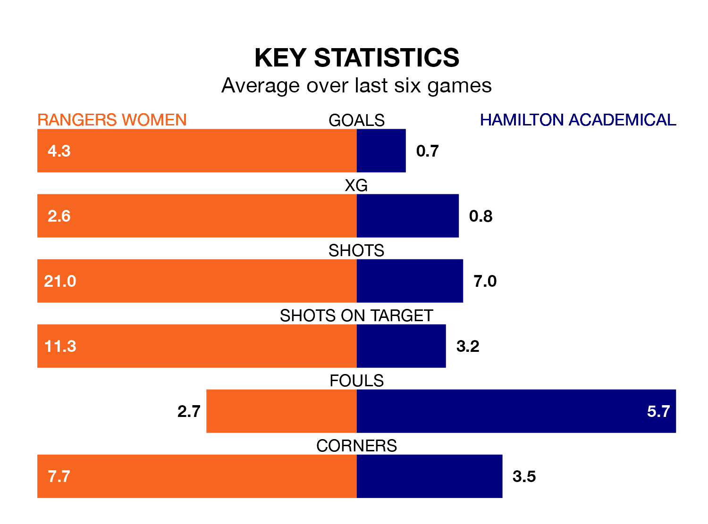

Relegation candidates Hamilton Academical face a challenge away against high-flying Rangers Women at the Broadwood Stadium on Sunday.
Hamilton Academical are rooted to the bottom of the SWPL 1 table, and have picked up no wins and three draws in their 15 games to date.
Rangers, meanwhile, are top of the standings with 43 points, having won 14 and drawn one.
Rangers are in exceptional form in SWPL 1, with six wins and no losses from their last six games.
With no wins and two draws over that period, Hamilton Academical's form is much worse – they have taken two points from 18, compared to the hosts' 18.
With 71 goals in 15 games so far this season, Rangers are the league's second-highest scorers with 4.7 goals per game. And they are conceding fewer than average, letting in eight goals at a rate of 0.5 per game.
The Accies, meanwhile, are below average scorers, with 0.7 goals per game, compared to a league average of 2.2. They have conceded 4.3 goals per game.
In Rio Hardy, Rangers have the league's sharpest shooter so far this season. She has notched 18 goals in 15 appearances.
Her goal rate of one every 73 minutes is much quicker than that of Josephine Giard, the away side's top scorer with a goal every 210 minutes, and a total of six goals in 15 games.
Over the last year, Rangers and Hamilton Academical have played each other twice. Rangers won both of them.
Their last meeting was on October 8, when Rangers won 6-0 away.
Rangers' last match was on December 10, a 5-0 win against Motherwell Women, with Sarah Ewens (two), Bance Bance, Hardy and Jane Ross getting the goals for Rangers.
Hamilton Academical drew 1-1 with Aberdeen last time out, also on December 10, with Giard on the scoresheet.
